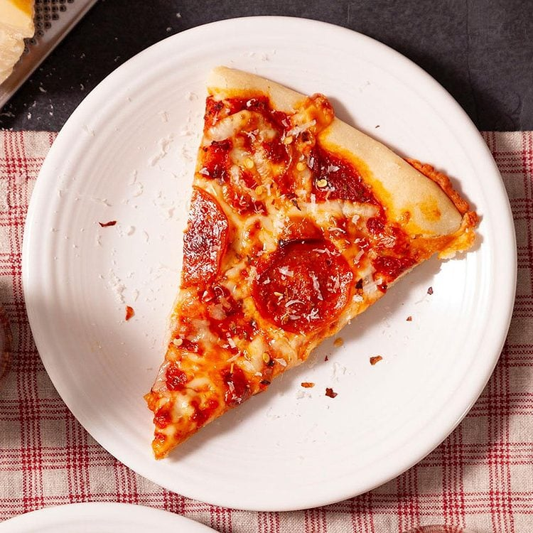

Home
Recipe for Pizza

Image credit: Taste of Home
Description
Ingredients
- 1 package (1/4 ounce) active dry yeast
- 1 teaspoon sugar
- 1-1/4 cups warm water (110° to 115°)
- 1/4 cup canola oil
- 1 teaspoon salt
- 3-1/2 to 4 cups all-purpose flour
- 1 can (15 ounces) tomato sauce
- 3 teaspoons dried oregano
- 1 teaspoon dried basil
-
2 cups toppings of your choice (like sliced pepperoni, cooked crumbled
sausage, chopped onion, sliced mushrooms, chopped green pepper or sliced
olives), optional
- 2 cups shredded part-skim mozzarella cheese
Steps
-
In large bowl, dissolve yeast and sugar in water; let stand for 5
minutes. Add oil and salt. Stir in flour, 1 cup at a time, until a soft
dough forms.
-
Turn onto a floured surface; knead until smooth and elastic, 2-3
minutes. Place in a greased bowl, turning once to grease the top. Cover
and let rise in a warm place until doubled, about 45 minutes.
-
Punch down dough; divide in half. Press each half into a greased 12-in.
pizza pan. Combine the tomato sauce, oregano and basil; spread over each
crust. If desired, add toppings of your choice. Sprinkle with cheese.
- Bake at 400° for 25-30 minutes or until crust is lightly browned.
Original recipe from "Homemade Pizza" by Val Goodrich